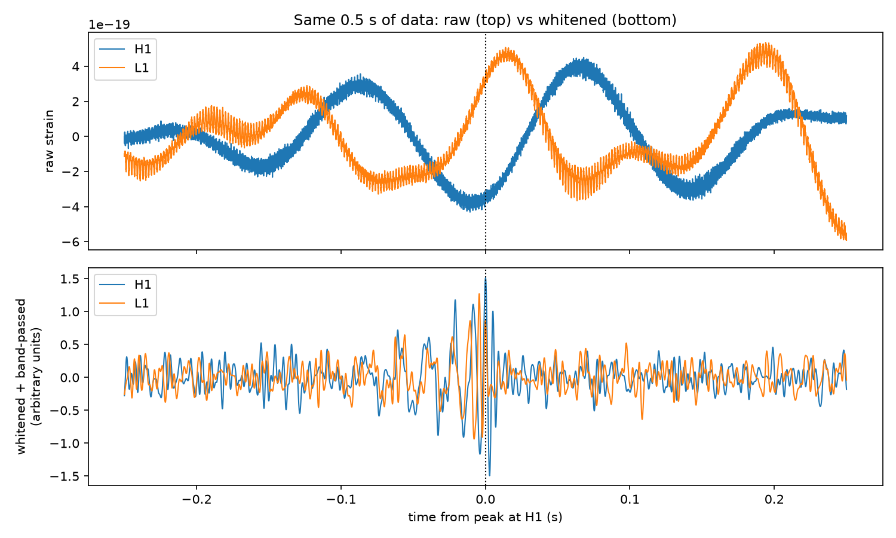
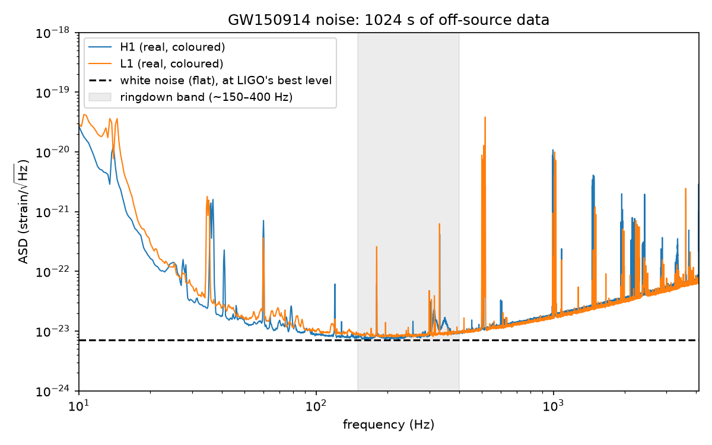
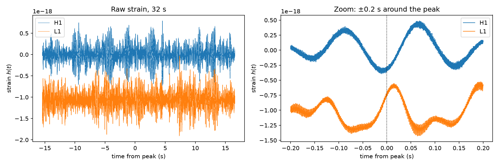
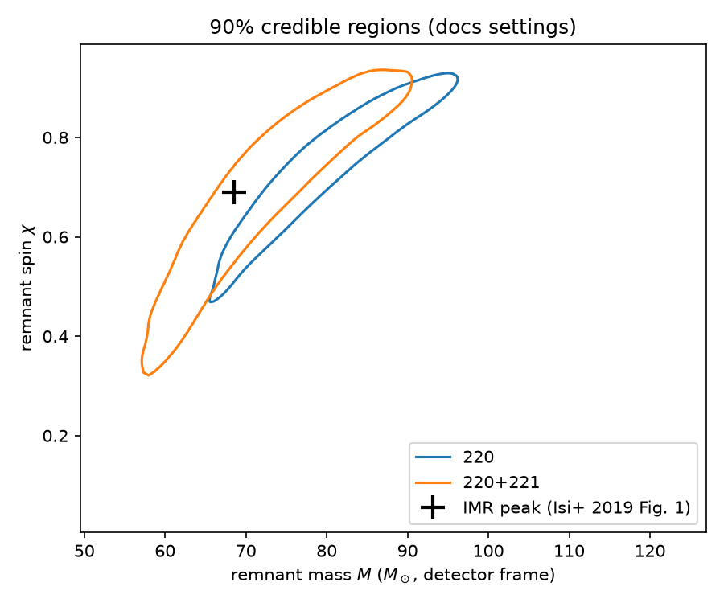
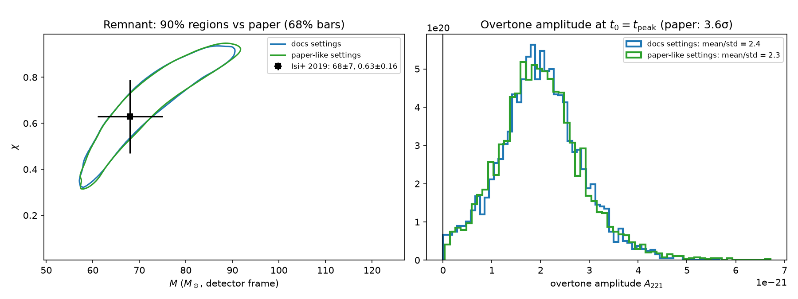
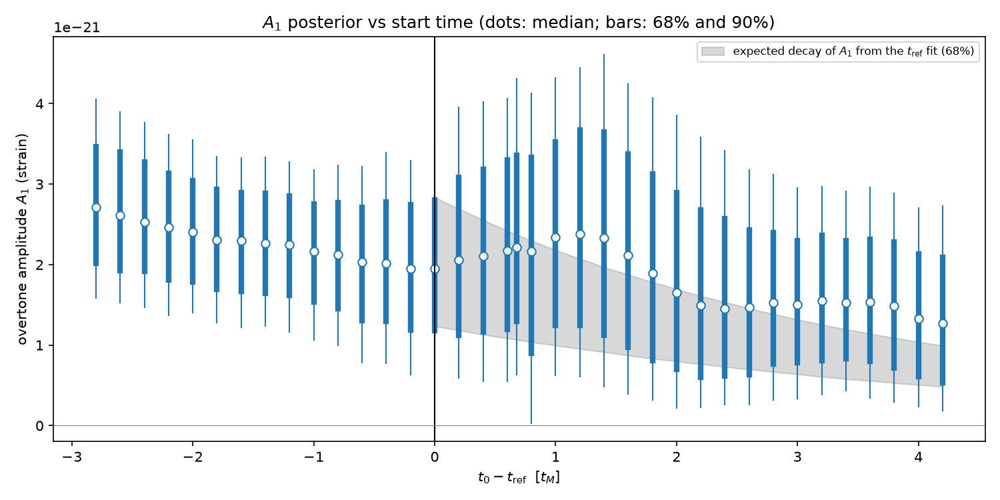
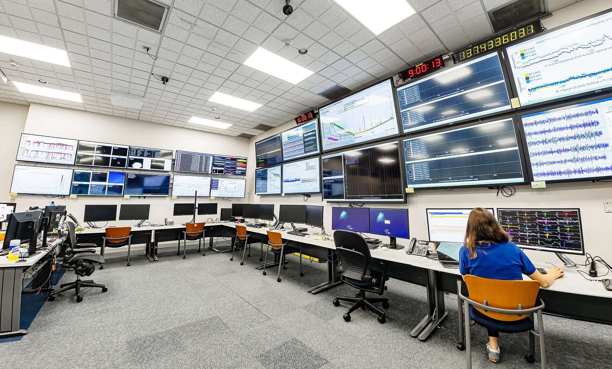
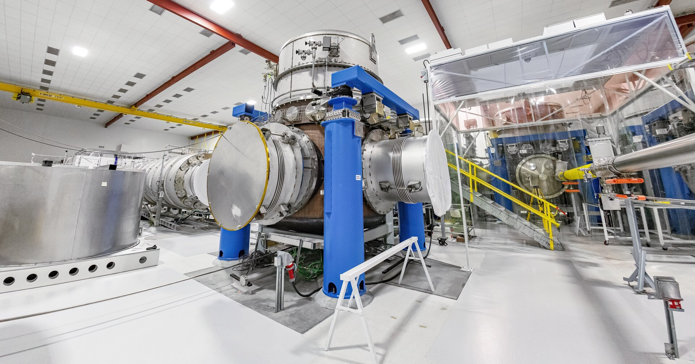

Two LIGO detectors , one gravitational-wave signal

buried in coloured noise
, and a claim that its ringdown contains a second, faster tone.
The signal you can't see
LIGO's raw strain swings by approximately 2×10⁻¹⁹, while the ringdown signal is only of order 10⁻²¹. The signal is therefore buried in much larger detector fluctuations. LIGO's noise also depends on the frequency: its amplitude spectral density reaches a minimum of approximately 7×10⁻²⁴ /√Hz around 160–215 Hz.
Dividing out that noise frequency by frequency (a process called whitening, used to reduce the frequency-dependent character of noise) makes the chirp appear in both detectors, right at the peak time. All four data files match LIGO's published checksums.
Noise in, posterior out
I used the Isi–Farr ringdown package to fit damped sinusoids directly to the time-domain LIGO data. I compared two models: one containing only the fundamental 220 mode and another including the first overtone, 221. Using the package's reference settings, I obtained a remnant mass of M=72.3 ± 8.1 M⊙ and a dimensionless spin of 0.68 ± 0.16, closely matching the documented values of 72.1 ± 8.2 M⊙ and 0.68 ± 0.17.
Whiten
Measure each detector's noise from 1024 s away from the event and divide it out. Unlike my Build, which assumed white noise, this analysis accounts for the frequency-dependent noise.
Fit
I fitted the modes as two damped sinusoids, 220 and 221, whose frequencies and decay times come from one mass and one spin. Livingston receives their signal 6.98 ms before Hanford, through its own antenna pattern.
Sample
Four Hamiltonian Monte Carlo chains keep 1,000 draws each: the posterior on mass, spin and both amplitudes. The 220 mode rings at 242 Hz. The overtone fades in 1.5 ms.
Against the paper
Isi et al. 2019, at their start time t₀ = GPS 1126259462.423, with settings copied from the code Isi & Farr released in 2022.
2.3σ
My overtone amplitude has a posterior mean 2.32 standard deviations above zero. The paper reports 3.6σ.
72.8
Remnant mass in solar masses, detector frame, ± 8.2. The paper: 68 ± 7.
0.69
Remnant spin, ± 0.17. The paper: 0.63 ± 0.16.
How Start Time Changes The Result
Cotesta et al. 2022 argued the overtone's significance changes even when the start time moves by less than a millisecond. Isi & Farr 2022 challenged this interpretation. I repeated the same 220 + 221 fit at every start time below. Time is in units of tM = GM/c³ = 0.34 ms, for M = 69 M⊙.
2.3σ
mean ÷ std of the overtone amplitude
t₀ − tref = 0.00 tM (0.00 ms)
median ÷ std 2.26 · M = 72.8 M⊙ · χ = 0.73
Orange: my significance at each start time. Grey bands: where Cotesta et al. 2022 place the true peak (±1σ dark, ±2σ light). Black star: the 3.6σ of Isi et al. 2019. Drag the slider, or use the arrow keys, to read any start time.
Smooth, not jumpy
I found that the significance decreases from 3.7σ at −2 tM to 1.6σ at +2 tM. Start times 0.07 ms apart never differ by more than about 0.35σ, therefore I do not see the sharp dip just before and after the paper's t₀ that Cotesta et al. reported.
As big as the noise
Inside Cotesta's ±1σ range for where the peak really is, the answer runs from 3.3σ down to 1.6σ. That spread is wider than the ±1σ scatter Isi & Farr got by repeating the analysis on different stretches of noise.
3.6σ needs an early start
My fit only reaches the paper's 3.6σ when it starts 1.6 tM (0.54 ms) or more before the paper's t₀, about where Isi & Farr see the Kerr model start to break down. Later, the remnant mass drifts from 76 to 66 M⊙.
The notebooks
five, all executed
- Get the data1 GB Downloads H1 and L1 strain from GWOSC, checks the MD5 checksums and plots the raw strain.
- Understand the noiseWelch PSD Estimates each detector's noise spectrum from 1024 s of off-source data, compares it with white noise and whitens the event.
-

Reproduce the docs4 + 24 min The official ringdown example, with the fundamental alone and with the overtone, both tied to one mass and spin. -

Check the paper7 min Paper-like settings at the paper's start time; mass, spin and overtone significance next to Isi et al. 2019. -

Scan the start time37 fits The same fit from 2.8 tM before to 4.2 tM after the paper's start time, covering Cotesta's ±2σ peak range.

What this can't show
Modelling choices change the answer. Here is how far my result can be trusted.

Why 2.3σ, not the paper's 3.6σ?
Same event, same start time, same two-mode Kerr model. However, my computational pipeline differs from the original analysis. I estimate the noise using the 4096-second data file and the defaults of ringdown 1.1.0, whereas the 2019 analysis used 64 seconds of off-source data. I also use NumPyro's Hamiltonian Monte Carlo sampler instead of kombine, together with a different amplitude prior and single-precision calculations. These differences may contribute to the discrepancy between 2.3σ and 3.6σ, but I have not isolated the effect of each one.
So was the paper wrong?
My result cannot establish that. Isi & Farr 2022 injected a GW150914-like signal into real LIGO noise near the event and got about 3.5σ on average, with scatter of about ±1σ from one noise stretch to the next. On that yardstick 2.3σ and 3.6σ are not very far apart: they could both come from the same real overtone, or from noise.
Does the start time matter?
In my scan, yes, about as much as the noise does. Within the range where Cotesta et al. 2022 place the true peak, the significance runs from 3.3σ to 1.6σ. But it changes smoothly, which is closer to what Isi & Farr 2022 describe than to the sudden drops Cotesta et al. report. The overtone amplitude itself stays close to what a real overtone fading in 1.5 ms would give; the significance drops mainly because the posterior widens when the fit starts later.
Is "mean ÷ std" a fair test of detection?
It is the number Isi et al. 2019 quoted, so it is the right one to compare against, but it is not a full detection test. Cotesta et al. 2022 point out it is misleading when the amplitude posterior piles up against zero, and Isi & Farr 2022 show the Bayes factor alternative shifts with the prior's maximum amplitude. I did not compute Bayes factors.
What is tM, and why use it?
tM = GM/c³ is the natural clock of a black hole of mass M. Isi & Farr 2022 use M = 69 M⊙, so 1 tM = 0.34 ms. The overtone fades with a decay time of 1.5 ms in my fit, about 4.4 tM; Cotesta et al. 2022 quote about 1.3 ms, or 4 M. So moving the start by 1 tM should only shrink a real overtone by about a fifth.
What changed from my Build?
In the Build I fitted damped sinusoids to simulated data in white noise, with least squares and Fisher-matrix error bars. Here the data are real, from two detectors, noise is coloured and measured from the data itself, and the answer is a full posterior sampled with Hamiltonian Monte Carlo rather than one best fit with an error bar.
What is left out?
One noise realisation, so no injection study of my own. No Bayes factors. The start time is scanned, not marginalised over. Only the 221 overtone, no 222 or higher angular modes. No test of general relativity: the frequencies are tied to the Kerr prediction throughout.